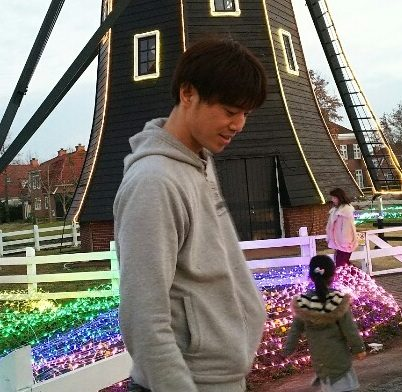

TKG
ソフトウェアエンジニア
佐賀県
委託／フルリモート
国内・海外チーム対応可
九州大学理学部物理学科を卒業。特に理論物理学に興味を持ち、大学院では素粒子物理学をさらに深く学びました。
家庭の事情により物理の道を断念し、その後企業に就職。WEBデザインを入口にIT分野へ転身しています。
メーカー系のIT企業にて約10年間、自社サービスの企画・開発から社内システムの保守までを幅広く担当。
2018年からは業務委託で受託開発を始め、8年半にわたって9件の案件に参画。
医療・車載機器・家電・健保・賃貸保証・鉄道・建設と、7つの業界のシステム開発に携わってきました。
Ruby on Rails を中心に React / Next.js を組み合わせたフルスタック開発が得意分野です。
バックエンドのAPI設計から認証・クラウドインフラまで一気通貫で対応できます。
直近では Claude Code・Codex を活用したAI駆動開発にも取り組み、
調査・設計・実装・レビューの一連の業務で精度と速度を上げています。
仕事の進め方
- 要件が固まる前から入ります。「社内からこういう声がある」「お客様からこういう要望がある」という段階でご相談いただき、ヒアリング・提案資料の作成から着手した案件が複数あります。
- 決めた経緯を必ず文書に残します。問題点・検討の経緯・決定事項をドキュメント化して共有し、あとから誰が見ても判断の理由を追えるようにしています。
- テストは分岐をすべて通します。RSpec は常に書き、ライブラリ・モデル・コントローラそれぞれの単位でテストを用意したうえで、実際に操作しての動作検証も行います。
- アジャイル／スクラムでの開発が中心です。スプリントレビューでの報告、タスクの割り振り、コードレビューを含めたチーム開発の進行に慣れています。
これまでお客様からは、「開発速度が速い」「吸収が速い」という評価をいただいてきました。
新しい技術や業務知識のキャッチアップの早さは、幅広い業種の案件に対応してこられた理由でもあります。
物理から離れたあとも、数学・物理の学習ノートを共有するSNS「ScienceHub」を個人開発し、
企画・設計・実装・インフラ構築まで一人で手がけて現在も運用しています。